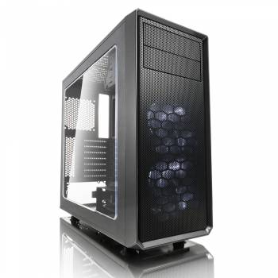
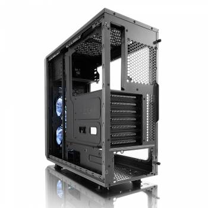

Корпус Fractal Design FOCUS G черный ATX Midi-tower
 
Описание товара
Корпус для ПК Fractal Design FOCUS G черный ATX. ATX-корпус с продуманным внутренним пространством, которое обеспечивает компактное размещение производительных компонентов.
Цена: 90$
Подробное описание товара
Корпус Fractal Design Focus G — неотъемлемая база Вашего компьютера, которая совмещает весь функционал системы в единый центр. Внутреннее пространство данной модели детально продумано, позволяя размещать необходимые элементы компактно без загромождения. Классика в черном цвете подойдет как для домашнего пользования, так и для нужд офиса.Корпус Fractal Design Focus G не только совмещает рабочие элементы, но и защищает их от перегрева, обеспечивая продолжительный срок службы. Достигается это с помощью своевременного и грамотного охлаждения. Помимо системы вентиляции с помощью кулеров и радиаторов, Вы можете по своему усмотрению организовать систему жидкостного охлаждения.
Характеристики товара
| Размещение HDD: | поперечное |
| Расположение БП: | нижнее |
| Количество слотов расширения: | 7 |
| Вес корпуса: | 4.5 |
| Тип корпуса: | Midi-Tower |
| Материал корпуса: | сталь |
| Фронтальные аудио-разъемы: | Да |
| Фронтальные разъемы USB 2.0: | 1 |
| Отсеки 3,5″ внутренние: | 2 |
| Отсеки 5,25″ внешние: | 2 |
| Форм-фактор материнской платы: | ATX |
| Максимальная длина видеокарты: | 380 |
| Размеры корпуса: | 205×444×464мм |
| Цвет: | черный |
| Наличие блока питания: | Отсутствует |
| Число доп. вентиляторов 120мм: | 6 |
| Гарантия (мес): | 12 |
| Бренд: | FRACTAL DESIGN |
| Фронтальные разъемы USB 3.0: | 1 |
| Отсеки 2,5″ внутренние: | 2 |
| Вентиляторы на передней панели: | 2 |
| Размер фронтальных вентиляторов: | 120мм |
| Прозрачная боковая панель: | ДА |
| Число доп. вентиляторов 140мм: | 4 |
Обзор корпуса Fractal Design FOCUS G на сайте www.overclockers.ua
Дополнительная информация для покупателей:
Конструкция корпуса в сборе достаточно крепкая, но если его разобрать, некоторые панели можно погнуть пальцами.Внимание!Товар подлежит обмену и возврату, только при наличии чека!